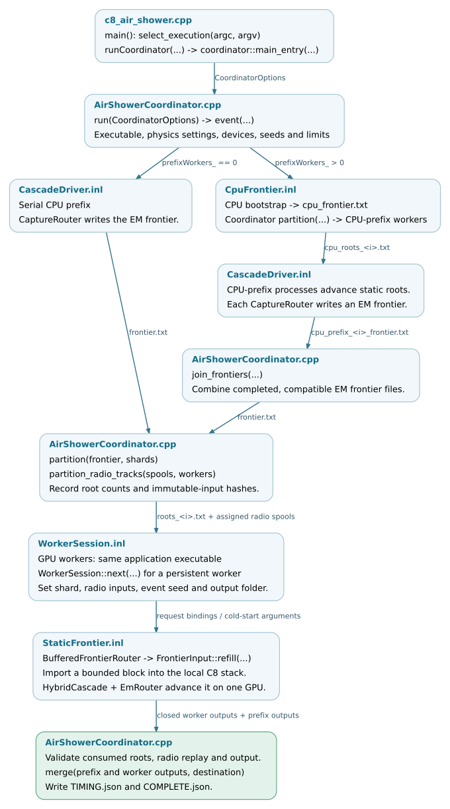

Process coordination and worker lifecycle
The coordinator partitions a shower into static root lists, runs application processes in CPU-prefix and GPU-worker roles, and merges their completed outputs. Each GPU worker uses the local execution described in Hybrid event execution. The parent coordinator manages these processes and their files; particle kernels execute in the workers.
A shard is the subset of frontier roots assigned to one worker. Each root provides the initial state for a subshower continued by that worker.
Execution selection and configuration
The application’s early select_execution(argc, argv) call selects direct
or coordinated execution. On the coordinated path, runCoordinator(...)
enters coordinator::main_entry(...), which parses CoordinatorOptions
and calls run(options).
The options include the worker executable, physics arguments, selected devices,
event count, seed, prefix-worker count, split energies, memory fraction and
timeout. main_entry returns a process exit status. run writes run-level
and per-event records, returns void on success and throws on failure.
When coordinator support is compiled in, multiple selected GPUs or an explicit
--prefix-workers option trigger this selection. A valid coordinated run
uses multiple GPUs, or one GPU with a positive prefix-worker count. Direct
single-GPU and OpenMP execution remain in the application’s event loop.
The parallel-prefix and persistent-worker paths currently require
kokkos-proposal.
Coordinated event lifecycle
Each event proceeds through prefix generation, work assignment, worker execution and output merging:
Produce a frontier. With zero prefix workers, one CPU prefix advances the primary and writes
frontier.txtthrough the capture-router path. With a parallel prefix, an initial CPU bootstrap advances the primary and writes eligible particle states tocpu_frontier.txtusing the configured splitting-energy criterion.partition(...)assigns those roots to CPU-prefix processes. Each process advances its roots with native C8 physics and exports an EM frontier.join_frontiers(...)combines the completed, compatible frontier files.Assign GPU work.
partition(frontier, shards)assigns each root once to a static GPU shard and returns JSON audit data including counts and hashes.partition_radio_tracks(...)separately assigns prefix radio-track spools to workers. A worker may receive radio work even when its particle shard is empty.Execute worker assignments. Each worker runs the same application executable. Its visibility environment exposes the assigned GPU, selected locally as device zero. It reads its shard and radio inputs, runs the local hybrid cascade and writes event output. Workers without particle or radio work are skipped.
Validate and merge. The coordinator checks process status, required outputs, consumed-root counts and immutable input hashes. It then calls
merge(parts, destination)with the prefix and worker output directories in order. Profiles and fields are combined and particle records are concatenated.COMPLETE.jsonis written after these steps; exceptions produceINCOMPLETE.json.
Assignments remain fixed during the event; there is no inter-worker particle exchange or work stealing. Root count alone does not determine processing time, because subshowers can have different transport and radio workloads. The CPU-prefix worker count and GPU worker count are independent configuration values.
Bounded frontier import
In the bounded-import path, CascadeParticleInput binds a FrontierInput
to the event. BufferedFrontierRouter wraps EmRouter and gives existing
backend work priority over importing another block:
251 if (TBaseRouter::pending()) return TBaseRouter::advanceOneWavefrontAndReturn(stack);
252 if (source_ && source_->pending())
253 return source_->refill(stack, cs_, limit_, topology_);
254 return 0;
FrontierInput::refill(stack, cs, limit, topology) reads numerical particle
records, validates the environment and history identities, then imports them
into the empty native stack. It returns the number of imported roots.
The hybrid event loop reaches this refill path after the current scalar and
router work has drained. The wrapper’s pending() also includes unread
input, keeping the event active while roots remain in the file.
C8_STATIC_FRONTIER_IMPORT_BATCH overrides the import block, with an accepted
range of 1–65536 roots. Without the override, the wrapper derives it from
minimumBatchSize(), clamped to that range. This controls the number of
subshower roots introduced at a time; worker count and kernel launch
configuration are separate controls. FRONTIER_FEED.json records consumed
roots and import batches.
Persistent-worker lifecycle
coordinator::run keeps a WorkerPool across events when reuse is enabled:
682 WorkerPool pool;
683 bool const reuse =
684 o.persistentWorkers_ && o.events_ > 1 && o.emBackend_ == "kokkos-proposal";
The pool starts after the first event’s CPU prefix. Workers publish
READY.json after model setup; GPU initialization occurs on the first
non-skipped request. Subsequent requests reuse the session and its allocated
resources. Events execute sequentially: the coordinator completes the current
event’s workers and merge before starting the next event. The GPU worker
processes remain alive while that next prefix runs.
Interface |
Data and operations |
|---|---|
Coordinator to |
|
Worker session to application objects |
|
Session to EM backend |
|
Worker to coordinator |
|
Native CPU random streams continue across requests, including streams retained by physics models. The worker restores decay flags and resets interaction histograms without rewinding those streams. Device sampling uses the request seed and particle history. Reuse therefore changes random-stream progression relative to separate process launches. Reproducibility comparisons must specify the worker-lifetime and random-stream policies; statistical validation is required when those policies differ.
Completion and timing records
Timing records have distinct scopes:
Record |
Timing scope |
|---|---|
Per-event |
Event wall time, CPU-prefix phase, output merging and process/request records. The first event includes worker startup when reuse is enabled. |
Persistent-worker request |
One request’s elapsed time within an existing process. It includes backend initialization on the worker’s first non-skipped request. |
Run-level |
Elapsed time for the complete multi-event run and a list of event times. |
These measurements are wall-clock intervals. GPU kernel activity and CPU core-hours require separate device or CPU-usage measurements. See Outputs and run checks for output conventions.
COMPLETE.json establishes execution and output completion. Statistical
physics agreement and performance acceptance require their own comparison;
the coordinator’s file and counter checks do not establish either.
Coordination data flow


Workers exchange frontier files, radio-track files and control records with
the coordinator. Each worker constructs its local C8 objects. Arrows identify
the data transferred between stages; source links are available in the
full-size SVG.
SVG ·
Editable DOT source.